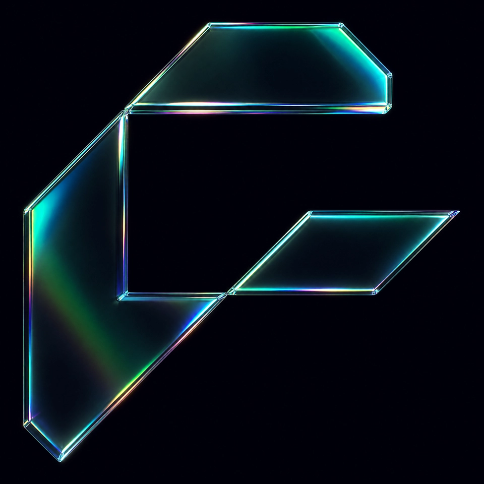
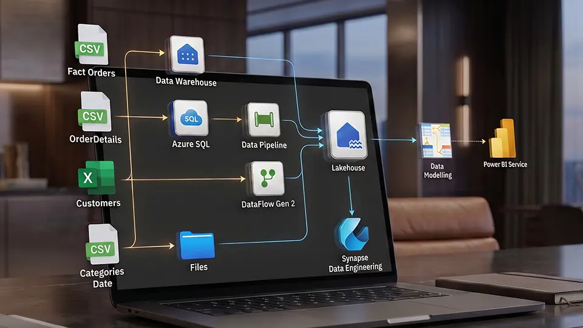

Fundamentos do Microsoft Fabric
Você sai entendendo a arquitetura inteira do Fabric e o lugar de cada peça (Lakehouse, Warehouse, Pipeline, Notebook).

A formação completa em Microsoft Fabric, plataforma que a Microsoft está empurrando como sucessora natural do Power BI corporativo. Quem dominar primeiro, decide os próximos 3 anos da carreira.
Não é "fazer mais um curso de plataforma". É virar a pessoa que define como a sua empresa vai operar Fabric pelos próximos anos.
3 cursos densos, ~53h. Sequência sugerida do 1 ao 3, do macro da plataforma à entrega de solução completa.
Você sai entendendo a arquitetura inteira do Fabric e o lugar de cada peça (Lakehouse, Warehouse, Pipeline, Notebook).
Você sai construindo pipeline de transformação de dado em escala, dentro da própria plataforma.
Você sai entregando projeto end-to-end no Fabric, do dado bruto ao relatório consumido pelo usuário final.
Você sai com projetos completos em Fabric, vantagem competitiva enquanto o mercado ainda está na curva inicial.

Projeto finalProjeto entregando arquitetura inteira (Lakehouse + Pipeline + Power BI), reutilizável em qualquer empresa que esteja adotando Fabric.
Microsoft Fabric Mastery, Early Adopter da Stack Corporativa do Futuro
Lakehouse, Warehouse, Pipeline, Notebook. Você entende cada peça e a relação entre elas, sabendo defender escolha em comitê técnico.
Construção de pipeline corporativo dentro da plataforma, com volume e performance reais. Sai do "fiz exemplo no curso" pra "implantei pipeline produtivo".
Modelagem em Bronze/Silver/Gold, padrão da arquitetura medalhão. Cobertura completa do lado de engenharia de dados moderna.
Entrega de projeto inteiro do dado bruto ao relatório consumido. Você sai com discernimento de arquiteto, não com lealdade cega à plataforma.
Profissional de mercado que já implantou Fabric e Data Warehouse em empresa grande. Não acadêmico.
Especialista em Microsoft Fabric.
Mentor único da formação, conduz os 3 cursos (Fundamentos, Transformações e Soluções Completas). Cobertura completa e coerente da plataforma, do macro à entrega de solução produtiva.
Feita pra você que já tem base sólida em Power BI e quer apostar carreira em early adoption.
Você é sênior em Power BI, entrega solução corporativa, e está olhando pra próxima evolução do cargo. Arquiteto de Dados ou Analytics Engineer ganha 40-60% mais que analista sênior, e Fabric é a porta natural de entrada nessa função.
Encaixe ideal: Fabric end-to-end + Lakehouse cobrem exatamente o salto técnico pra Arquiteto.
Você trabalha em empresa do ecossistema Microsoft (que já paga licença Power BI / Office / Azure), e o time interno está discutindo migração pra Fabric. Quer chegar na conversa sabendo do que está falando, não dependendo de consultor externo.
Encaixe ideal: Cobertura completa de arquitetura te entrega o vocabulário e a prática pra liderar a migração.
Você atende cliente PJ entregando dashboard ou solução de dados, e quer subir o ticket virando "o consultor que entrega Fabric end-to-end". Mercado ainda tem poucos especialistas BR em Fabric, oportunidade de posicionamento clara.
Encaixe ideal: Posicionamento de early adopter num nicho com poucos competidores ainda.
Você é coordenador ou gerente de TI numa empresa de 500-5.000 funcionários, está avaliando a stack de dados dos próximos 3 anos. Quer entender Fabric em profundidade pra decidir adoção, dimensionamento e plano de migração.
Encaixe ideal: Decisão de arquitetura corporativa é tema central da formação.

Assistir depoimento de:
Edson

Assistir depoimento de:
Eduardo

Assistir depoimento de:
Cláudio

Assistir depoimento de:
Cleiton

Assistir depoimento de:
Daniel

Assistir depoimento de:
Vinícius

Assistir depoimento de:
Gabriel

Assistir depoimento de:
Ezequiel

Assistir depoimento de:
Louiz

Assistir depoimento de:
Pedro

Assistir depoimento de:
Vitória
Discord, fórum e lives quinzenais durante o trimestre da sua formação. Ambiente onde quem está implantando Fabric agora troca com quem já implantou.
Fórum dedicado dentro da plataforma pra quem está nessa frente, vantagem clara de network num nicho ainda pequeno no Brasil.
Exemplos prontos pra reutilizar em projeto real ou demo de cliente, ativo direto pro portfólio.
Referência pra consulta durante implantação, com padrões e anti-padrões de Fabric.
Certificado oficial Xperiun de conclusão da Formação, reconhecido por empresa que tem alunos da Xperiun no time.
Leva só essa formação, ou todas as 7 mais cases mais comunidade mais certificado MEC.
Anuidade com crédito vitalício de upgrade. Se decidir subir pra Completa depois, os R$ 997 viram crédito integral.

Anuidade. Crédito vitalício. O que você paga nunca evapora.

Mensalidade só vale enquanto você paga: parou, perdeu tudo. Aqui é anuidade, e se você não renovar, os R$ 997 viram crédito vitalício pra subir pra Xperiun Completa, MBA ou Pós Tech. Crédito não vence, sem letra miúda.
Precisa. A formação pressupõe que você já entrega dashboard em Power BI e domina conceito básico de modelagem de dados. Se você está começando do zero, faça primeiro a Formação 1 (Power BI Básico ao Intermediário).
A Microsoft posicionou Fabric como evolução do Power BI corporativo, com investimento e roadmap claros. O risco residual é de ritmo (pode demorar 3-5 anos pra virar padrão de fato), não de direção. Quem aprende agora pega a curva certa antes da maioria.
Depende do seu ponto de partida. Se você já é avançado em Power BI (DAX sênior, modelagem corporativa), pode ir direto na 3. Se ainda tem gap em Power BI, faz mais sentido fechar a 2 antes ou ir direto pra Completa que cobre as duas.
Aluno que dedica 1 hora por dia (5h por semana) termina em 10 a 12 semanas. Carga total ~53h, com Soluções Completas exigindo prática hands-on dentro da plataforma.
Os R$ 997 que você pagou na Formação 3 viram desconto integral se subir pra Xperiun Completa depois. R$ 1.997 da Completa menos R$ 997 já pagos = R$ 1.000 pra fechar. Crédito vitalício, não vence.
Sim, certificado Xperiun por competência ao final da formação. O selo MEC via UNIFATEC é exclusivo da Xperiun Completa.
Sim, o ideal. A formação te orienta sobre como ativar trial gratuito do Fabric pra prática durante o aprendizado. Empresa que já paga licença Microsoft normalmente tem Fabric disponível ou habilita sob demanda.
Em 3 anos, todo analista sênior vai ter Fabric no currículo. A diferença é quem chegou primeiro.